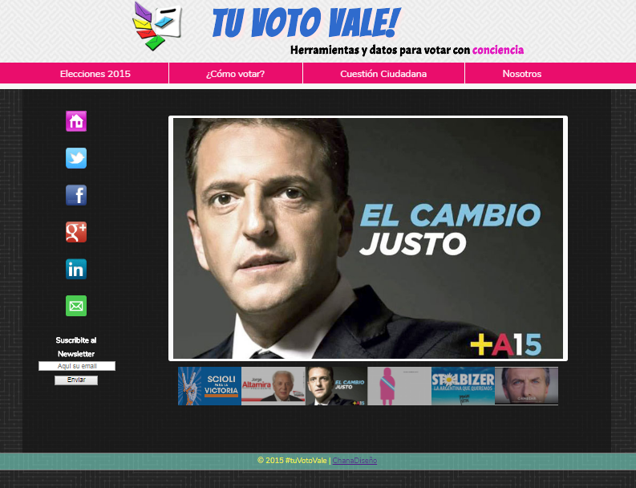

Portfolio

Tu voto vale! / 2015
Sitio dedicado a las elecciones presidenciales del año 2015 en Argentina

San Martín / 2018
Sitio desarrollado en homenaje al Gral. José de San Martín
Mi nombre es Analía Soledad. Me gusta trabajar, aprender cosas nuevas y buscar desafíos para crecer.
Descubrí mi pasión por el desarrollo web hace muy poco, y mi objetivo es insertarme profesionalmente en el ámbito tecnológico.
Sitio dedicado a las elecciones presidenciales del año 2015 en Argentina
Sitio desarrollado en homenaje al Gral. José de San Martín
Diseñado por ChanaDiseño